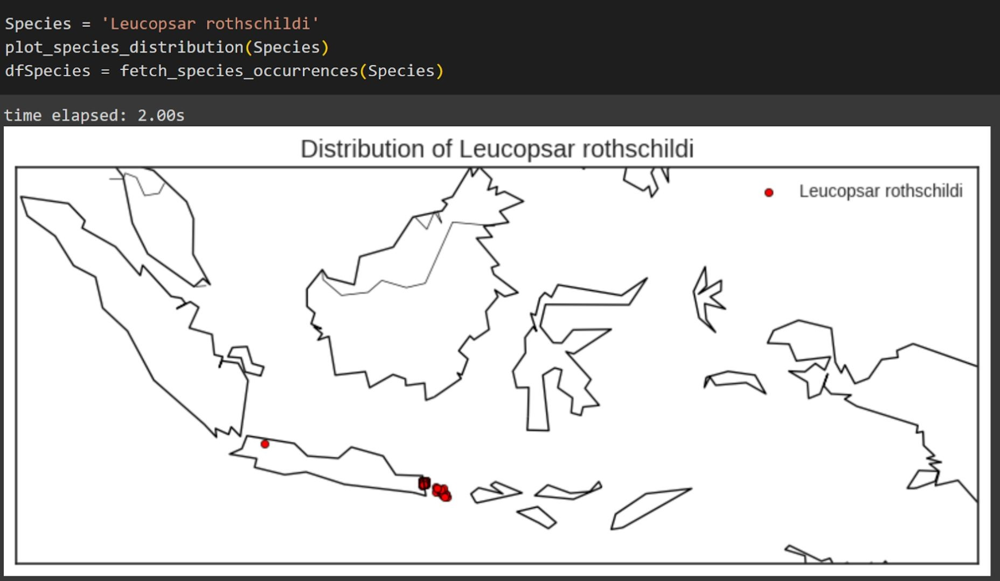
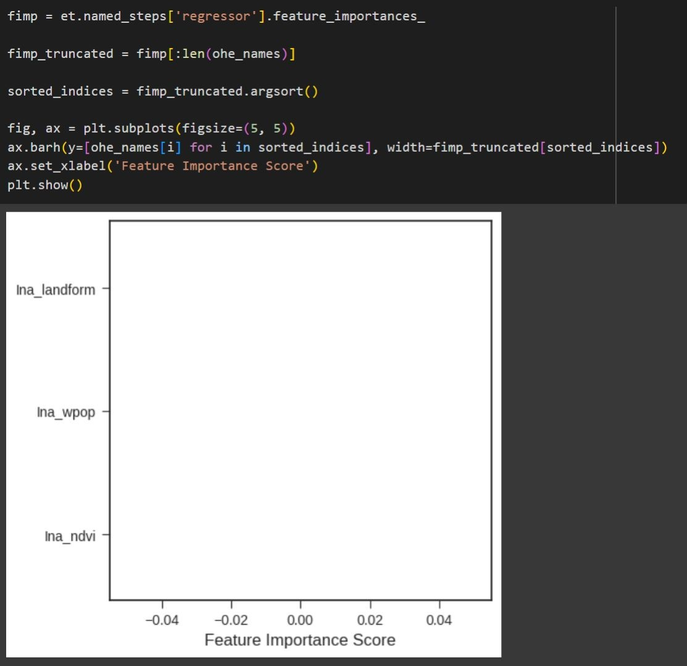
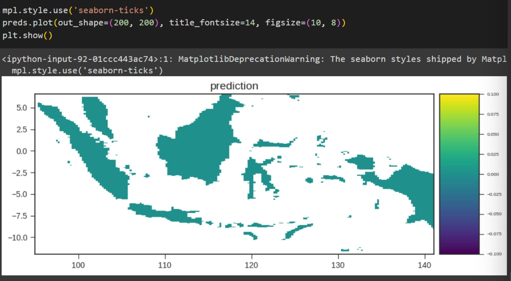
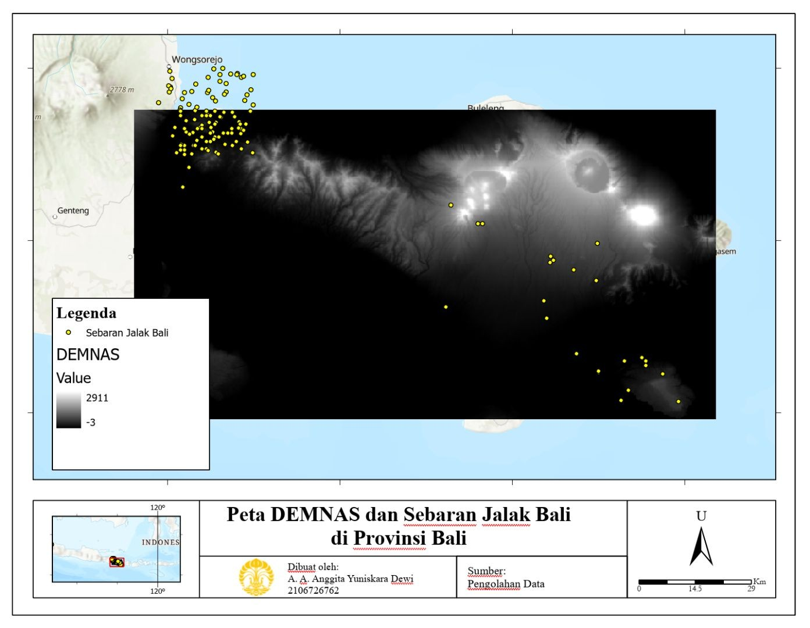
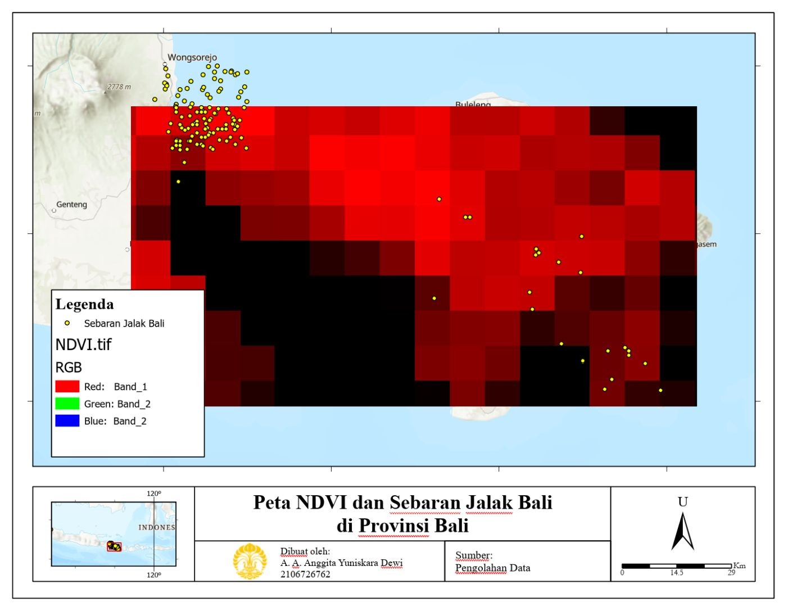
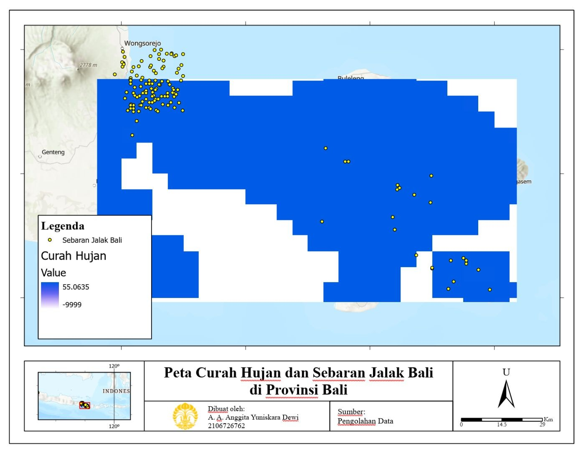

Pengembangan Model Distribusi Spesies dengan Integrasi Data Lingkungan dan Machine Learning Pipeline
Latar belakang
Untuk melindungi suatu spesies, pertanyaan pertama yang harus dijawab adalah di mana ia hidup dan wilayah mana yang masih cocok baginya. Jalak Bali (Leucopsar rothschildi) adalah burung yang dikenal endemik Bali dengan habitat yang sangat terbatas, sementara data lapangan tentang sebarannya sulit dan mahal diperoleh. Karena itu, titik kemunculan spesies yang tersedia secara terbuka, seperti data GBIF, perlu dimanfaatkan semaksimal mungkin.
Salah satu caranya adalah memadukan titik kemunculan tersebut dengan data lingkungan lewat model distribusi spesies. Agar prosesnya rapi, dapat diulang, dan bisa diterapkan pada spesies lain, proyek ini membangunnya dalam sebuah machine learning pipeline di Python, yaitu rangkaian tahapan sistematis yang mengubah data mentah menjadi data siap olah untuk prediksi, mulai dari pembangunan, pelatihan, evaluasi, hingga penerapan model. Proyek ini menguji pipeline tersebut pada Jalak Bali, lalu menafsirkan pola sebarannya dengan elevasi, vegetasi, dan curah hujan.
Data yang digunakan
| Data | Sumber / Format | Kegunaan |
|---|---|---|
| Titik kemunculan Jalak Bali | GBIF (via pygbif) | Data kehadiran spesies |
| Batas wilayah Indonesia | Shapefile (SHP) | Filter titik dan peta dasar |
| NDVI | Raster (Ina-ndvi.tif) | Prediktor: kerapatan vegetasi |
| Kepadatan penduduk (WorldPop) | Raster (Ina-wpop.tif) | Prediktor: tekanan manusia |
| Landform | Raster (Ina-landform.tif) | Prediktor: bentuk lahan |
| DEMNAS | Raster elevasi | Interpretasi habitat di Bali |
| Curah hujan (5 tahun) | Raster | Interpretasi habitat di Bali |
Metode
Seluruh proses dikerjakan di Google Colab dengan Python, lalu interpretasi peta disusun di ArcGIS. Tahapannya:
- Persiapan data kehadiran. Pustaka pyspatialml, pygbif, geopandas, matplotlib, dan basemap dipasang dan diimpor. Titik kemunculan Jalak Bali diambil dari GBIF lewat fungsi buatan sendiri, lalu diubah menjadi GeoDataFrame dengan CRS EPSG:4326.
- Titik acak dan filter wilayah. Ditambahkan 30 titik acak berlabel noFoundSpecies sebagai data "tidak ditemukan". Semua titik difilter dengan spatial join terhadap batas Indonesia, dan kelas diberi kode 1 untuk Jalak Bali dan 0 untuk titik acak.
- Penyusunan prediktor. Tiga raster (NDVI, WorldPop, landform) ditumpuk menjadi satu raster stack, lalu nilainya diekstrak pada setiap titik dan digabung dengan kelas spesies. Data dibersihkan dari nilai kosong dan kolom geometri.
- Pelatihan model. Pipeline dibuat dari ColumnTransformer (OneHotEncoder) dan ExtraTreesRegressor dengan 500 pohon, lalu dilatih dengan fitur sebagai X dan kelas sebagai y.
- Evaluasi dan prediksi. Model dievaluasi dengan 10-fold cross validation dan RMSE, feature importance dihitung, lalu model dipakai untuk memprediksi seluruh raster stack.
- Interpretasi habitat. Sebaran titik dioverlay dengan DEMNAS, NDVI, dan curah hujan di ArcGIS untuk membaca pola habitat di Provinsi Bali.
Hasil
Ada tiga temuan utama. Pertama, data kehadiran Jalak Bali sangat timpang: hampir seluruh titik menumpuk di satu sudut area kajian, dan hanya beberapa titik yang tersebar di Bali bagian tengah dan timur. Kedua, dengan data sesempit itu dan tiga prediktor nasional (NDVI, kepadatan penduduk, landform), model belum mampu membedakan habitat yang cocok dan tidak cocok. Ketiga, ketika titik-titik tersebut dibaca langsung bersama DEMNAS, NDVI, dan curah hujan, pola yang konsisten muncul: Jalak Bali berada di wilayah tinggi, bervegetasi rapat, dan lebih basah.
Ketimpangan data terlihat jelas pada peta berikut. Titik Jalak Bali mengelompok padat di barat laut area kajian, dekat Pulau Jawa, sementara titik acak sebagai data pembanding tersebar di Jawa bagian barat. Spesies dengan sebaran sesempit ini hanya memberi sedikit contoh bagi model untuk belajar.

Akibatnya, grafik feature importance tidak menunjukkan prediktor yang dominan. Nilai NDVI, kepadatan penduduk, dan landform semuanya berada di sekitar nol. Tidak ada satu pun dari ketiganya yang dapat disebut sebagai penentu utama sebaran Jalak Bali berdasarkan model ini.

Hal ini tercermin pada peta prediksi untuk seluruh Indonesia. Nilainya hampir seragam di semua daratan, dengan rentang yang sangat sempit (sekitar −0,1 sampai 0,1), sehingga peta ini belum bisa dipakai untuk menunjuk area yang layak dilindungi. Temuan ini penting: untuk spesies endemik dengan sebaran sempit, prediktor tingkat nasional dan sedikit titik kehadiran tidak cukup untuk menghasilkan peta kesesuaian habitat yang berguna.

Karena model belum bisa menjawab, pola habitat dibaca langsung dari data lingkungan, dan di sini hasilnya lebih tegas. Pada peta DEMNAS, yang elevasinya berkisar dari sekitar −3 hingga 2.911, titik Jalak Bali terkonsentrasi di barat laut yang berelevasi cukup tinggi, ditambah beberapa titik di tengah dan timur Bali yang juga berada di area lebih tinggi. Sebagai burung yang bisa terbang, Jalak Bali mampu menjangkau ketinggian tersebut, dan wilayah tinggi lebih sulit dijangkau predator darat sehingga burung ini lebih terlindungi.

Pola yang sama muncul pada NDVI, dan di sini terlihat persoalan yang lebih besar. Bagian selatan Bali bervegetasi rendah karena sudah banyak terisi permukiman, sedangkan vegetasi rapat bertahan di wilayah yang lebih tinggi, tempat sebagian besar titik Jalak Bali berada. Dengan kata lain, vegetasi rapat yang menjadi habitat Jalak Bali kini terdesak ke wilayah tinggi, sementara wilayah rendah sudah berubah menjadi perkotaan.

Curah hujan memperkuat gambaran tersebut. Variasinya kecil karena datanya dirata-ratakan selama lima tahun, tetapi curah hujan cenderung lebih besar di wilayah yang lebih tinggi, selaras dengan pola elevasi dan vegetasi. Seluruh titik Jalak Bali berada di area yang memiliki data curah hujan.

Ketiga pola tersebut saling menguatkan:
| Data | Pola di wilayah kajian | Artinya bagi Jalak Bali |
|---|---|---|
| DEMNAS | Elevasi rendah di selatan dan pesisir, makin tinggi ke wilayah tengah dan barat laut. | Titik terkonsentrasi di wilayah tinggi, tempat burung ini mampu terbang dan lebih terlindung dari predator darat. |
| NDVI | Vegetasi rendah di selatan yang padat permukiman, makin rapat ke wilayah tinggi. | Sebagian besar titik berada di area bervegetasi rapat, yang kini terdesak ke wilayah tinggi. |
| Curah hujan | Variasi kecil, namun cenderung lebih besar di wilayah tinggi. | Habitat cenderung berada di wilayah yang lebih tinggi dan lebih basah. |
Kesimpulan
Proyek ini menunjukkan bahwa membangun model distribusi spesies bukan sekadar menjalankan algoritma. Kualitas dan jumlah data kehadiran serta pemilihan prediktor menentukan apakah prediksinya bermakna. Pipeline berhasil mengalirkan data dari GBIF hingga peta prediksi, tetapi dengan titik kehadiran yang timpang dan tiga prediktor nasional, hasilnya masih seragam sehingga belum bisa menunjuk habitat yang layak dilindungi. Meski begitu, pembacaan langsung terhadap DEMNAS, NDVI, dan curah hujan memberi petunjuk awal bahwa habitat Jalak Bali berada di wilayah tinggi yang bervegetasi rapat dan lebih basah, sementara wilayah rendah sudah banyak terisi permukiman. Langkah berikutnya adalah menambah titik kehadiran yang sudah diverifikasi dan memakai prediktor beresolusi lebih detail di Bali, supaya pipeline ini dapat menghasilkan peta kesesuaian habitat yang berguna bagi konservasi.
← View other projects